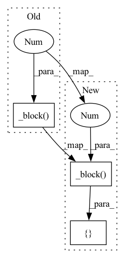

Pattern ID :27267

Before Change
self._block(channels_noise, features_g * 16, 4, 1, 0), // img: 4x4
self._block(features_g * 16, features_g * 8, 4, 2, 1), // img: 8x8
self._block(features_g * 8, features_g * 4, 4, 2, 1), // img: 16x16
self._block(features_g * 4, features_g * 2, 4, 2, 1), // img: 32x32
nn.ConvTranspose2d(
features_g * 2, channels_img, kernel_size=4, stride=2, padding=1
),
After Change
class Generator(nn.Module):
def __init__(self, channels_noise, channels_img, features_g):
super(Generator, self).__init__()
self.net = nn.Sequential(OrderedDict([
// Input: N x channels_noise x 1 x 1
("block1", self._block(channels_noise, features_g * 16, 4, 1, 0)), // img: 4x4
("block2", self._block(features_g * 16, features_g * 8, 4, 2, 1)), // img: 8x8
("block3", self._block(features_g * 8, features_g * 4, 4, 2, 1)), // img: 16x16
("block4", self._block(features_g * 4, features_g * 2, 4, 2, 1)), // img: 32x32
("transpose_conv_out", nn.ConvTranspose2d(
features_g * 2, channels_img, kernel_size=4,
stride=2, padding=1)),
// Output: N x channels_img x 64 x 64
("tanh", nn.Tanh()),
]))
def _block(self, in_channels, out_channels, kernel_size, stride, padding):
In pattern: SUPERPATTERN
Frequency: 3
Non-data size: 3
Instances
Fragment ID: 80949779
Project Name: ebartrum/lightning_gan_zoo
Commit Name: 1d681697b401ba1e5d909535f57653d61b848928
Time: 2021-01-15
Author: edward.bartrum@gmail.com
File Name: core/networks.py
M Class Name: Generator
N Class Name: Generator
M Method Name: __init__(4)
N Method Name: __init__(4)
M Parent Class: nn.Module
N Parent Class: nn.Module
M File Name: core/networks.py
N File Name: core/networks.py
M Start Line: 46
M End Line: 57
N Start Line: 46
N End Line: 57
'>
Before Change
),
nn.LeakyReLU(0.2),
// _block(in_channels, out_channels, kernel_size, stride, padding)
self._block(features_d, features_d * 2, 4, 2, 1),
self._block(features_d * 2, features_d * 4, 4, 2, 1),
self._block(features_d * 4, features_d * 8, 4, 2, 1),
// After all _block img output is 4x4 (Conv2d below makes into 1x1)
After Change
class Discriminator(nn.Module):
def __init__(self, channels_img, features_d):
super(Discriminator, self).__init__()
self.disc = nn.Sequential(OrderedDict([
// input: N x channels_img x 64 x 64
("conv_in", nn.Conv2d(
channels_img, features_d, kernel_size=4, stride=2, padding=1
)),
("leaky_relu", nn.LeakyReLU(0.2)),
// _block(in_channels, out_channels, kernel_size, stride, padding)
("block1", self._block(features_d, features_d * 2, 4, 2, 1)),
("block2", self._block(features_d * 2, features_d * 4, 4, 2, 1)),
("block3", self._block(features_d * 4, features_d * 8, 4, 2, 1)),
// After all _block img output is 4x4 (Conv2d below makes into 1x1)
("conv_out", nn.Conv2d(features_d * 8, 1, kernel_size=4, stride=2, padding=0)),
("sigmoid", nn.Sigmoid()),
]))
def _block(self, in_channels, out_channels, kernel_size, stride, padding):
'>
Fragment ID: 80949787
Project Name: ebartrum/lightning_gan_zoo
Commit Name: d0ec14e8cc60da7db50ea8e713b7b383c1d2a315
Time: 2021-01-15
Author: edward.bartrum@gmail.com
File Name: core/networks.py
M Class Name: Discriminator
N Class Name: Discriminator
M Method Name: __init__(3)
N Method Name: __init__(3)
M Parent Class: nn.Module
N Parent Class: nn.Module
M File Name: core/networks.py
N File Name: core/networks.py
M Start Line: 10
M End Line: 23
N Start Line: 11
N End Line: 24
'>
Before Change
// Input: N x channels_noise x 1 x 1
("block1", self._block(channels_noise, features_g * 16, 4, 1, 0)), // img: 4x4
("block2", self._block(features_g * 16, features_g * 8, 4, 2, 1)), // img: 8x8
("block3", self._block(features_g * 8, features_g * 4, 4, 2, 1)), // img: 16x16
("block4", self._block(features_g * 4, features_g * 2, 4, 2, 1)), // img: 32x32
("transpose_conv_out", nn.ConvTranspose2d(
features_g * 2, channels_img, kernel_size=4,
After Change
def __init__(self, channels_noise, channels_img, features_g, img_size=64):
super(Generator, self).__init__()
n_blocks = int(math.log2(64/4))
block_list = [
("block1", self._block(channels_noise, features_g * (2**n_blocks), 4, 1, 0)), // img: 4x4
]
block_list.extend([
(f"block{a}", self._block(features_g * 2**b, features_g * 2**(b-1), 4, 2, 1))
'>
Fragment ID: 80949770
Project Name: ebartrum/lightning_gan_zoo
Commit Name: 33cb57daa95823255bd830c1a9686d2515df75af
Time: 2021-04-22
Author: edward.bartrum@gmail.com
File Name: core/models/standard_networks.py
M Class Name: Generator
N Class Name: Generator
M Method Name: __init__(5)
N Method Name: __init__(4)
M Parent Class: nn.Module
N Parent Class: nn.Module
M File Name: core/models/standard_networks.py
N File Name: core/models/standard_networks.py
M Start Line: 58
M End Line: 69
N Start Line: 56
N End Line: 75